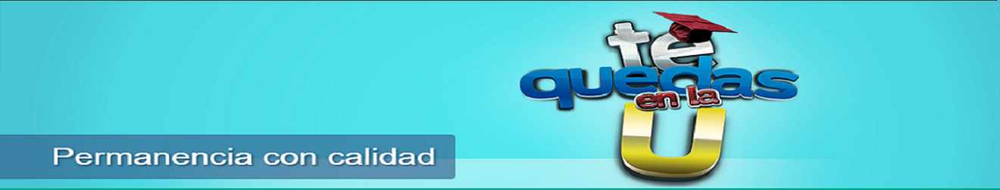

PROGRAMA DE PERMANENCIA ACADEMICA
Acerca de
El Programa de Permanencia con Calidad y Prevención de la Deserción Estudiantil, Te quedas en la U, trabaja en el diseño y ejecución de estrategias y acciones para el fomento de la permanencia y graduación exitosa de los estudiantes que ingresan a la educación superior, a partir de acciones integradas y formalizadas dentro de la política orientada a la permanencia y graduación estudiantiles.
Objetivo General
Posicionar en la comunidad educativa de la Fundación Universitaria Luis Amigó el tema de la prevención de la deserción estudiantil, a través de la institucionalización, implementación, monitoreo continuo y evaluación permanente de estrategias que apoyen el desarrollo de competencias básicas y complementarias en los estudiantes, facilitando un proceso de adaptación al ámbito universitario, un aprendizaje significativo y contribuyendo a la permanencia y graduación con calidad.
